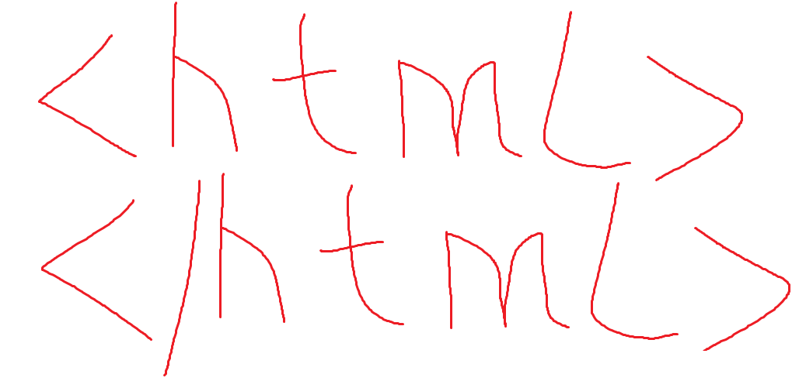

HTML
HTML (от англ. HyperText Markup Language — «язык гипертекстовой разметки») — стандартизированный язык
гипертекстовой разметки документов для просмотра веб-страниц в браузере. Веб-браузеры получают HTML документ от
сервера по протоколам HTTP/HTTPS или открывают с локального диска, далее интерпретируют код в интерфейс, который
будет отображаться на экране монитора.
Тим Бернерс-Ли является «отцом» основополагающих технологий веба — HTTP, URI/URL и HTML, хотя их теоретические
основы были заложены ещё раньше. В 1940-х годах Вэнивар Буш выдвинул идеи расширения памяти человека с помощью
технических устройств, а также индексации накопленной человечеством информации для её быстрого поиска. Тед
Нельсон и Даг Энгельбарт предложили технологию гипертекста — «ветвящегося» текста, предоставляющего читателю
разные варианты чтения. Xanadu, так и не законченная гипертекстовая система Нельсона, была предназначена для
хранения и поиска текста, в который введены взаимосвязи и «окна». Нельсон мечтал связать перекрёстными ссылками
все тексты, созданные человечеством.
Создание сайтов
Разработка дизайна.
Веб-дизайнеры разрабатывают макеты веб-шаблонов страниц. Дизайнер определяет, каким образом конечный потребитель
будет получать доступ к информации и услугам сайта — то есть, занимается непосредственно разработкой
пользовательского интерфейса. В большинстве случаев страницы включают в себя графические элементы. Их
подготовкой занимаются художники, иллюстраторы, фотографы, технические дизайнеры, шрифтовики, и т. д. Готовые
шаблоны показываются заказчику. В этот момент страницы ещё не могут содержать конечного наполнения (это в
обязанности дизайнера не входит). Чтобы макеты выглядели более наглядно, в них помещается произвольное
содержимое. На сленге дизайнеров такое содержимое называется рыбой. Если заказчик удовлетворён внешним видом
шаблонов, то наступает следующая фаза разработки — вёрстка страниц сайта.
Вёрстка.
Верстальщик получает макеты шаблонов в виде простых изображений (например, в формате JPEG или PNG), либо
разбитых по слоям (например, в PSD или AI). Его задача — получить из этих графических макетов гипертекстовые
веб-страницы с подготовленными для интернета изображениями.
Одним из сложных моментов в работе верстальщика является обеспечение совместимости со множеством браузеров —
программами для просмотра веб-страниц (так называемая кроссбраузерность). Браузеры могут одни и те же элементы
разметки или правила CSS интерпретировать по-своему, в результате чего некоторые пользователи могут увидеть
содержимое не так, как задумывал дизайнер и ожидает увидеть заказчик. Когда верстальщик убедится, что
большинство браузеров одинаково отображают готовые шаблоны, наступает следующая фаза разработки —
веб-программирование.
Программирование
К программистам поступают готовые шаблоны страниц и указания дизайнеров по работе и организации элементов сайта.
Программист создаёт программную основу сайта, делая её с нуля, используя фреймворк или CMS. Выбор языка
программирования в данном случае — вопрос непринципиальный.
После того, как сайт готов к эксплуатации, наступает следующая фаза — наполнение сайта информацией.
HTML

© Розель Станислав Александрович